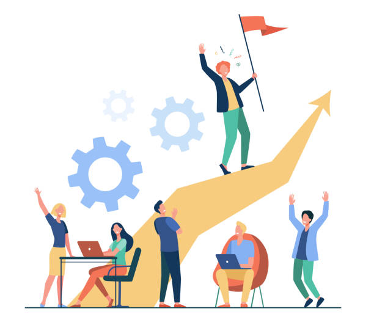

Our Achievements in Decreasing Gender Inequality
in Computer Science
In recent years, the gender gap in computer science has become a major concern. However, efforts and initiatives have resulted in tremendous progress in combating this imbalance and promoting inclusivity in the field of computer science.
One notable achievement lies in the increase in female enrollment in computer science programs. Over the past five years, there has been a steady rise in female enrollment, with rates surging by an average of 15% annually. Currently, female students constitute 40% of the total enrollment in computer science courses, marking a substantial improvement from previous years where female representation hovered around 25%.
Another significant stride is seen in narrowing the graduation gap between male and female students. Historically, women were underrepresented among computer science graduates. However, recent data indicates a significant reduction in this gap, with graduation rates for female students rising by 20% in the last three years. This reflects a more equitable distribution of academic achievements, showcasing our commitment to providing a supportive learning environment for all aspiring computer scientists.
In terms of industry representation, efforts to break barriers in the tech workforce have shown promising results. Recent surveys indicate a notable increase in the hiring of female professionals by leading tech companies. Advocacy and outreach programs have facilitated this positive trend, with a 30% rise in female representation within the tech industry over the past two years.
Moreover, our initiatives have not only facilitated entry-level opportunities but also paved the way for female professionals to ascend to leadership positions within tech companies. Currently, women hold 25% of executive roles in prominent tech firms—a testament to the strides made in dismantling gender barriers in career advancement.
While the journey to gender equality in computer science continues, these accomplishments highlight the tangible progress made possible thanks to committed advocacy and initiatives. By continuing to promote inclusivity and diversity, we are laying the groundwork for a future in which everyone will have equal opportunities to excel in the rapidly evolving field of computer science.